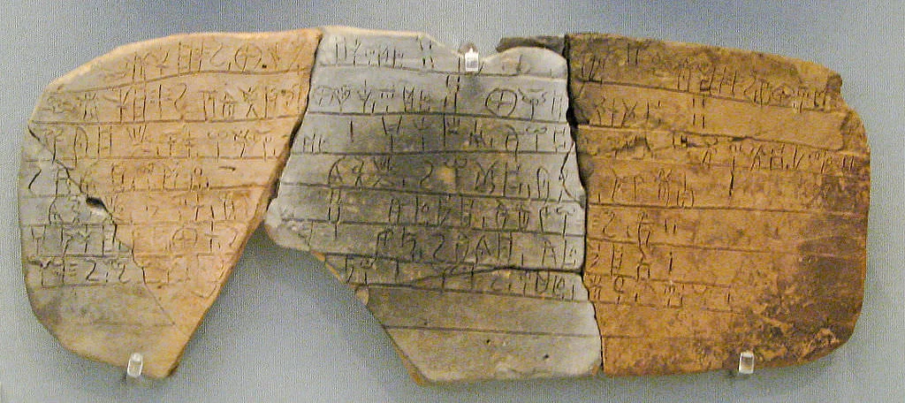

Get To Know The Minoans
What is Minoans About?
The Minoan civilization is one of the earliest culture which flourished during the Bronze Age
Minoans are well known for their uniqueness in arts and architectural layout.
What Happened to the Minoans?
The Minoans civilization still remains a mystery, the cause of their dissapearance have not yet been found.
Although, a traces of massive volcanic eruption occured on the island of santorini which causes damage throughout the Minoans surroundings.
Eventually, the eruption causes an earthquake which creates a tsunami and causes the coastsal settlements to be wiped out.
What language do they use?
Research have been conducted throughout all these years in searching for the language used by the minoans, although it is still unsuccessful.
There are 2 ways of communication discovered that were used by the Minoans, it is known as Linear A and Linear B which is one of the oldest evidence of writing.
